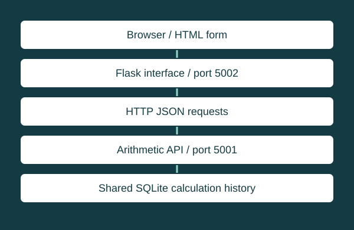

ENTD320 — Intermediate Python® Programming
Flask calculator microservices
Two HTTP services, a shared history, and a browser interface.

Implementation and architecture
The basic Flask service exposes four JSON POST endpoints. A second Flask service supplies Jinja templates, aggregate operations, and a history view. It calls the basic service over HTTP. Both services write to a shared SQLite calculations table.
Verified evidence
Source inspection confirms the routes, parameterized database inserts, and shared database path. The services were not started for this portfolio review; no end-to-end reliability or performance result is claimed.
Limitations
This is an educational prototype. The launch configuration enables Flask debugging, HTTP requests have no explicit timeout, and input validation is incomplete. The public site presents its architecture, not a hosted calculator backend. Production hardening would require a separate implementation.